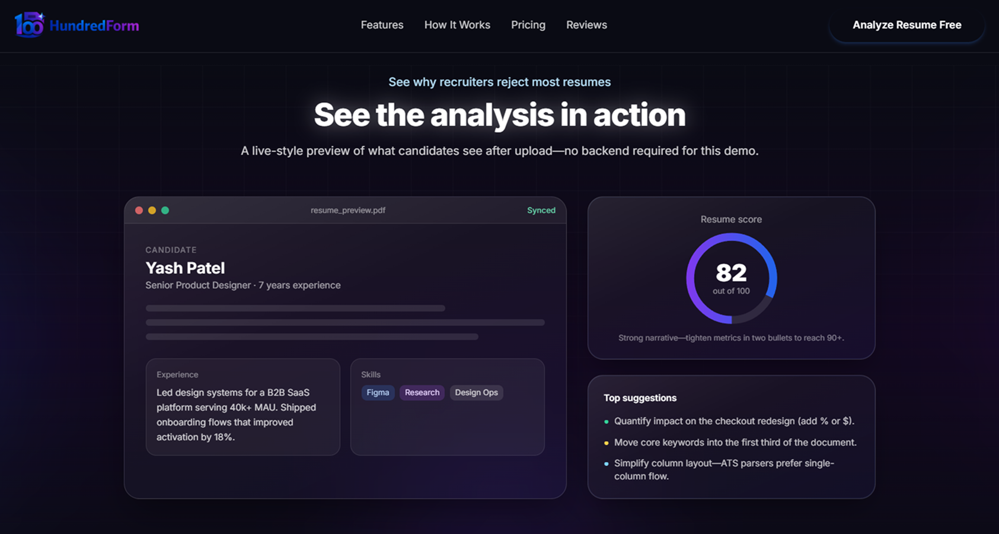

Built by career experts and AI engineers for job seekers
About Hunderedform
We help job seekers create ATS-friendly resumes with better resume keywords and clear feedback, so they can get more interview calls faster.
Better Resumes for Everyone
In today's job market, your resume is your first impression. We believe everyone deserves a fair chance to show their skills and experience clearly.
Hunderedform combines AI and recruiter guidance to help you create a resume that passes ATS checks and is easy for recruiters to read.

We Saw a Common Problem
Founded in 2024 by career coaches and AI engineers, Hunderedform started with one simple goal.
After reviewing thousands of resumes, we saw many talented people getting rejected because their resumes were not ATS-friendly or clear enough.
So we built an AI resume checker that gives clear feedback, better resume keywords, and practical edits anyone can use.
Today, Hunderedform helps freshers and experienced professionals improve their resumes, pass ATS filters, and get more interview calls.
How Our ATS Resume Checker Works
Upload your resume, get your ATS score with clear feedback, then fix each issue step by step in just a few minutes.
Upload
Just upload your PDF or Word file. We'll scan every section, heading, and bullet point in seconds.
See What's Wrong
You'll get a clear score, a list of issues sorted by importance, and simple tips to fix each one.
Fix & Improve
Fix each issue one by one. We'll help you rewrite and improve your resume until it is ready to apply.
What We Believe
Quality
We provide high-quality resume feedback based on real hiring standards.
Accessibility
Good resume help should be affordable and easy to access for everyone.
Innovation
We keep improving our AI tools based on hiring trends and recruiter feedback.
Our Mission and Vision
These ideas guide every product decision we make
Our Mission
Help every job seeker create a clear, ATS-friendly resume and get more interview calls without expensive coaching.
Our Vision
Become the most trusted and easy-to-use resume optimization platform for job seekers.
Ready to Get More Interview Calls?
Join thousands of job seekers using our AI resume builder and ATS checker to improve resume quality and get more interview calls.
Check My Resume Score Free